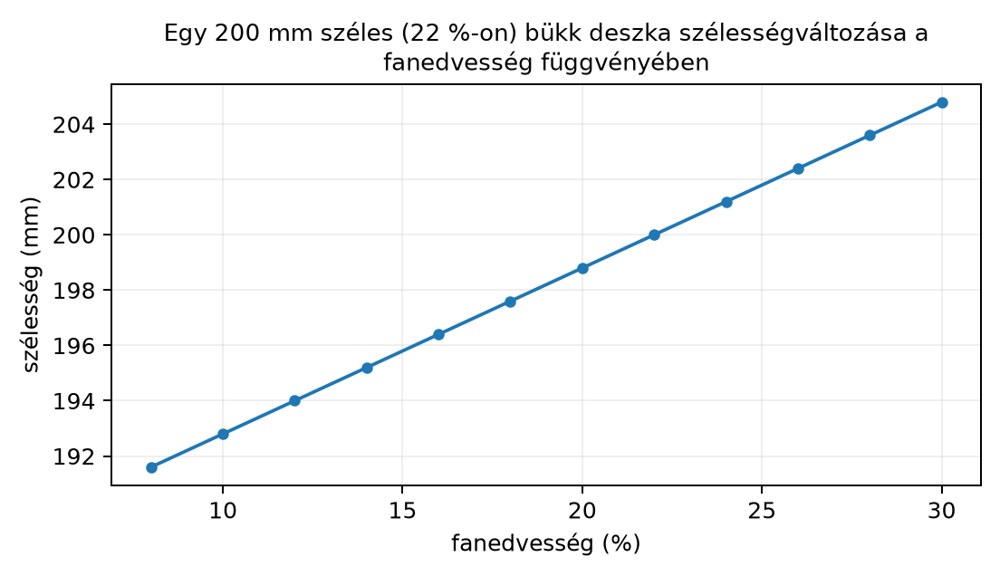
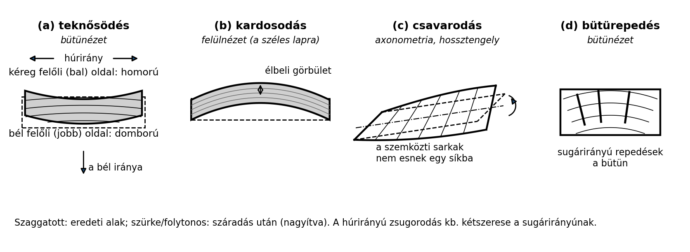

A nedves fa kiszárad, a száraz fa felveszi a nedvességet – a méret változik. Ezt a változást kell kiszámítani, és beépíteni a szerkezetbe, hogy a bútor ne repedjen szét, az ajtó ne szoruljon be.
Képzeld el, hogy egy vevő tömör tölgyfa asztallapot rendel. A műhelyben elkészíted, szépen lecsiszolod, lelakkozod. A vevő otthonában télen a fűtött szobában a levegő sokkal szárazabb, mint a műhelyben volt. Az asztallap néhány hét alatt keskenyebb lesz, a végein apró repedések jelenhetnek meg. Ha az asztallapot mereven, minden irányban rögzítetted a vázhoz, a zsugorodás feszültséget kelt, és a lap megrepedhet, vagy a keret széthúzódik. Ugyanígy egy konyhaajtó télen szorulhat a tokban, nyáron pedig lötyöghet. A fa „mozog”. Ha ezt nem érted, a gyönyörű bútor reklamáció lesz. Ebben az alfejezetben megtanulod kiszámítani, mennyit mozog a fa, és megtanulod, hogyan építsd a szerkezetbe ezt a mozgást.
Vegyünk egy frissen vágott, nedves bükk deszkát. Vastagsága 30 mm, szélessége 200 mm, hossza 1000 mm. A deszka rosttelítettségi határ (kb. 30 % nedvességtartalom, tájékoztató) feletti, most 60 %-os. Egy fűtött szobában lassan kiszárad 8 %-ra. A hossza alig változik, talán 1–2 mm-t. A vastagsága és a szélessége viszont érezhetően csökken: a 200 mm-es szélesség 10–15 mm-rel is keskenyebb lehet, a 30 mm-es vastagság 1–2 mm-rel vékonyabb. A deszka nem csak kisebb lesz; meg is görbül, elcsavarodik, a vége megreped. Ha évgyűrűi félkör alakban futnak, a deszka teknő alakúvá hajlik, a kéreg felőli oldala lesz a homorú. Ez a kép minden faipari munkánál fontos: amikor fűrészárut választasz, amikor lapot toldasz, amikor ajtót vagy asztallapot szerelsz, mindig a fa mozgására gondolj.

Az ábra egy egyenest mutat: minél szárazabb a fa, annál keskenyebb a deszka. Ez a zsugorodás a rosttelítettségi határ alatt jó közelítéssel arányos a nedvességtartalom változásával.
Definíció. Zsugorodás. A faanyag méretének csökkenése a nedvességtartalom csökkenésekor, a rosttelítettségi határ alatt. A zsugorodás mértéke a három anatómiai irányban eltérő: húrirányú (az évgyűrűk érintője mentén), sugárirányú (a béltől a kéreg felé) és rostirányú (a törzs hossztengelye mentén).
Definíció. Dagadás. A faanyag méretének növekedése, amikor a légszáraz vagy száraz fa nedvességet vesz fel. A dagadás ugyanazokban az irányokban jelentkezik, mint a zsugorodás, nagysága hasonló.
Definíció. Rosttelítettségi határ. Az a nedvességtartalom, amely alatt a sejtfalban kötött víz mennyisége csökken, és a fa mérete változik. Magyar fanemeknél ez jellemzően kb. 28–30 %, fafajtól függően (tájékoztató, ellenőrizendő). A rosttelítettségi határ felett a szabad víz távozik, de a sejtfalak telítettek, ezért a méret alig változik.
Szabály. A fa zsugorodása és dagadása a rosttelítettségi határ alatt közelítőleg arányos a nedvességtartalom változásával. Ha a nedvességtartalom -ről -re változik, akkor az adott irányú méretváltozás:
ahol:
A képletet úgy is felírhatjuk, hogy a relatív méretváltozást kapjuk:
Szabály. Ha a fa nedvességet vesz fel (dagadás), pozitív, így is pozitív (növekedés). Ha szárad, negatív, így negatív (zsugorodás).
Szabály. A differenciális zsugorodás értéke fafajtól függ, és irányonként eltér. Tájékoztató gyakorlati értékek (a gyakorlatban szokásos tartományok, ellenőrizendő szakkönyvi táblázatban):
A húrirányú zsugorodás rendszerint kétszerese a sugárirányúnak. A rostirányú zsugorodás olyan kicsi, hogy a legtöbb gyakorlati számításban elhanyagolható.
Definíció. Teljes zsugorodás. A faanyag méretváltozása a rosttelítettségi határról abszolút száraz állapotra (0 % nedvességtartalom) történő szárításkor, százalékban kifejezve. A teljes zsugorodás a differenciális zsugorodás és a rosttelítettségi határ szorzatával becsülhető:
Például ha és akkor a teljes húrirányú zsugorodás . Ez azt jelenti, hogy egy 200 mm széles deszka a rosttelítettségi határról abszolút szárazra szárítva kb. 18 mm-t keskenyebb lesz.
A differenciális zsugorodás fogalmát a mért adatokból vezetjük le. Tegyük fel, hogy egy deszka szélessége egy nedvességtartalomnál, és egy nedvességtartalomnál, ahol a rosttelítettségi határ alatt vannak. A méretváltozás:
A relatív méretváltozás:
Ezt elosztjuk a nedvességtartalom változásával:
Ez a hányados azt fejezi ki, hogy 1 % nedvességtartalom-változás hány % relatív méretváltozást okoz. Ha ezt az értéket ismerjük, akkor a méretváltozást a fenti szabály szerint számíthatjuk:
A differenciális zsugorodás értékét fafajonként méréssel határozzák meg, és táblázatokban adják meg. A gyakorlatban gyakran nem a teljes görbét, hanem egy átlagos értéket használunk. Ez a közelítés a legtöbb asztalos számításhoz elegendő.
Megjegyzés. A differenciális zsugorodás értéke a nedvességtartalomtól kissé függhet, és a fa anatómiai szerkezete (pl. évgyűrűszélesség, geszt-szijács arány) is befolyásolja. A táblázati értékek átlagos tájékoztató adatok.
Megjegyzés. A fenti képletben a és százalékban, illetve %/% mértékegységben szerepel. A számítás során a százalékpontot és a %/% értéket tizedestört alakban is használhatjuk: (1 %-ra jutó relatív változás). A képlet akkor is helyes, ha a -t %/%-ban és a -t százalékpontban adjuk meg, mert a százalékpontok kiejtik egymást, és az eredmény százalékban vagy tizedestörtben adódik. Például:
Ez a 3 % relatív zsugorodásnak felel meg ().
A deszka nem egyenletesen zsugorodik. A húrirányú zsugorodás nagyobb, mint a sugárirányú, és a deszka évgyűrűállása meghatározza, hogy a két irány milyen szögben hat a deszka síkjában. Ezért a száradó deszka nem csak kisebb lesz, hanem görbül is.
Teknősödés. Ha a deszkában az évgyűrűk félkör vagy ív alakban futnak úgy, hogy a deszka szélessége az évgyűrűk érintője felé áll, a húrirányú zsugorodás a deszka szélességét rövidíti. A kéreg felőli oldalon az évgyűrűk hosszabb húrirányú szakaszon futnak, ezért ez az oldal jobban zsugorodik: a deszka a kéreg felőli oldalán homorú, a bél felőli oldalán domború lesz (teknő alak). Szabály: az évgyűrűk száradáskor „kiegyenesedni” igyekeznek. Ez a leggyakoribb vetemedési forma.
Kardosodás. Ha a deszka hosszában a rostok nem tökéletesen párhuzamosak, vagy ha a deszkában a bélszövet közel van az egyik élhez, a hossz mentén eltérő zsugorodás lép fel. A deszka oldalra görbül, mint egy kard. Ezt nevezik kardosodásnak.
Csavarodás. Ha a deszkában a rostlefutás spirálisan csavarodott, a zsugorodás a deszka hossza mentén eltérő irányban hat, és a deszka megcsavarodik.
Bütürepedés. A deszka végén (bütü) a rostok rövidek, és a felszín gyorsan szárad. A bütüfelület zsugorodása nagyobb, mint a belső részeké, ezért a végeken sugárirányú repedések keletkeznek. Ezért kell a fűrészáru végeit lassan szárítani, vagy a végeket lekezelni (pl. viaszos, festékes bütülezárás, ellenőrizendő).

Az ábra (a) része bütünézetben mutatja a teknősödést: a húrvágott deszka a kéreg felőli (bal) oldalán homorú, a bél felőli (jobb) oldalán domború lesz, mert a kéreg felőli oldalon az évgyűrűk hosszabbak, így ott nagyobb a húrirányú zsugorodás. A (b) rész a széles lapjára nézve oldalra görbülő (kardosodó), a (c) a hossztengelye körül elcsavarodó deszkát, a (d) a bütün keletkező sugárirányú repedéseket mutatja.
A fűrészáru minőségét a bél helyzete is befolyásolja. Ha a deszka a rönk közepéről származik, és a bél benne van, akkor a zsugorodás a két oldalon eltérő lehet, és a deszka erősen teknősödik vagy reped. A bélhez közeli deszka gyakran hasad, csavarodik, mert a sugár- és húrirányú zsugorodás ellentétes feszültséget kelt. A tükrös deszka (sugárirányban vágott, azaz a metszési sík sugárirányú) sokkal stabilabb: a szélessége sugárirányú zsugorodást szenved, ami kisebb, mint a húrirányú, ezért kisebb a vetemedése. Ezért az igényes asztalosmunkához lehetőleg tükrös (sugárvágott) fűrészárut választunk, vagy a deszkát úgy válogatjuk, hogy a bél ne essen a széles felületre.
Az ábrán látszik, hogy a darab alakváltozása a rönkbeli helyétől függ: a béles deszka a bélnél megreped, és a szélei felé vékonyodik; a húros deszka kéreg felőli oldala homorú lesz; a tükrös deszka alig vetemedik, csak egyenletesen vékonyodik; az évgyűrűkhöz átlósan álló négyzetes léc rombusszá, a kör keresztmetszetű rúd oválissá torzul. A HTML-változatban a fanedvesség csúszkájával követheted az alakváltozást.
A fa mozgása nem szüntethető meg; be kell építeni a szerkezetbe. A legfontosabb elvek:
Szabály. A fa szélesség- és vastagságváltozása a nedvességtartalommal arányos. Ezért:
Figyelem. A fa mozgását nem lehet „legyőzni” erős csavarozással vagy ragasztással. Ha a mozgást gátoljuk, a fa megreped, a kötés elenged, a szerkezet elvetemedik. A helyes megoldás mindig a mozgást lehetővé tevő szerkezet.
A HTML-változat kalkulátorában megadhatod a kiinduló méretet, a fafajt, az irányt és a két nedvességtartalmat; a kalkulátor behelyettesítve mutatja a képletet (a %/% értéket tizedes alakra váltva), és az alábbi kidolgozott példák eredményét adja.
Adott. Egy bükk deszka szélessége , nedvességtartalma . A deszkát kiszáradt helyen tároljuk, és a nedvességtartalma lesz. A bükk húrirányú differenciális zsugorodása (tájékoztató, ellenőrizendő).
Keresett. Mennyivel lesz keskenyebb a deszka? Mekkora lesz az új szélessége?
Megoldás. A nedvességtartalom változása:
A méretváltozás:
Átváltva a %/% értéket:
A negatív előjel azt jelenti, hogy zsugorodás. Az új szélesség:
Ellenőrzés. A relatív változás . Ez összhangban van a értékkel. A nagyságrend hihető: egy 200 mm széles deszka 10 % nedvességváltozásra néhány mm-t zsugorodik.
Adott. Ugyanaz a bükk deszka, de most feltételezzük, hogy tükrös (sugárvágott). A bükk sugárirányú differenciális zsugorodása (tájékoztató, ellenőrizendő). A deszka szélessége , nedvességtartalma , cél .
Keresett. Mennyivel változik a szélesség? Mennyi az új szélesség?
Megoldás. , tehát:
Az új szélesség:
Összehasonlítás. A húrirányú deszka 6,0 mm-t, a sugárirányú csak 3,6 mm-t zsugorodott ugyanakkora nedvességváltozásra. Ezért a tükrös deszka stabilabb.
Adott. Egy tölgy deszka szélessége , nedvességtartalma . A deszka nedves pincébe kerül, és a nedvességtartalma lesz. A tölgy húrirányú differenciális zsugorodása (tájékoztató, ellenőrizendő). Feltételezzük, hogy a dagadási együttható megegyezik a zsugorodási együtthatóval.
Keresett. Mennyivel lesz szélesebb a deszka? Mekkora lesz az új szélessége?
Megoldás. .
Kerekítve: Az új szélesség:
Ellenőrzés. A relatív változás A képletből: a kerekítés miatt eltérés kicsi. A dagadás mértéke reális.
Adott. Egy bükk deszka rosttelítettségi határa (tájékoztató, ellenőrizendő). A húrirányú differenciális zsugorodás Mekkora a teljes húrirányú zsugorodás százalékban? Ha a deszka szélessége a rosttelítettségi határon , mekkora lesz abszolút szárazon?
Megoldás. A teljes húrirányú zsugorodás:
A méretváltozás a rosttelítettségi határról 0 %-ra:
Az abszolút száraz szélesség:
Megjegyzés. Ez a teljes zsugorodás a rosttelítettségi határtól abszolút szárazig. A gyakorlatban a szárított fa nedvessége nem 0 %, hanem a felhasználási helynek megfelelő egyensúlyi nedvesség (pl. bútor 8–10 %, fűtött helyiségben, tájékoztató). Ezért a tényleges méretváltozás kisebb.
Egy tanuló azt mondja: „A deszka hossza is ugyanúgy zsugorodik, mint a szélessége, mert a fa minden irányban zsugorodik.” Ez hiba. A rostirányú zsugorodás nagyságrendekkel kisebb. Például a bükk rostirányú differenciális zsugorodása (tájékoztató, ellenőrizendő). Egy 2000 mm hosszú deszka 10 százalékpontos nedvességcsökkenésre:
Míg a 200 mm-es szélesség 6 mm-t zsugorodott, a 2000 mm-es hossz csak 2 mm-t – relatíve a hosszváltozás 0,1 %, a szélességé 3 %. A gyakorlatban a hosszváltozást legtöbbször elhanyagoljuk, de a pontos munkánál figyelembe vesszük.
Szabvány. A faanyag zsugorodási és dagadási jellemzőinek mérésére és a fafajok tulajdonságaira vonatkozó magyar és európai szabványok léteznek, például a faanyag fizikai tulajdonságainak vizsgálatára vonatkozó MSZ EN ISO szabványok. A konkrét mérési eljárások (pl. zsugorodás mérése, nedvességtartalom-meghatározás) a faipari szabványokban találhatók. A pontos szabványszámokat és a vonatkozó határértékeket a mindenkor hatályos MSZ EN szabványgyűjteményből kell ellenőrizni (ellenőrizendő: aktuális szabványok). A gyártói adatlapokon a faalapú lapok mozgási jellemzőit (pl. méretváltozás magas páratartalomnál) a termékszabvány szerint adják meg.
Szabvány. A fűrészáru osztályozásánál a vetemedés megengedett mértékét az osztályozási szabványok rögzítik. Például a fűrészáru osztályba sorolásánál a teknősödés, kardosodás, csavarodás megengedett mértéke (mm/m-ben vagy %) meghatározott. Az ajánlott érték a fűrészáru osztályától függ; tervezésnél ellenőrizni kell az aktuális osztályozási szabványt.
A zsugorodás és vetemedés ellenőrzése a gyakorlatban két szinten történik:
Minőségellenőrzési mérés. Egy tömör fenyő ajtólap szélessége 20 °C-on, 40 % relatív páratartalom mellett 600 mm. A gyártó adatai szerint a fa egyensúlyi nedvessége ezen a klímán 8 %. Ugyanez a lap 20 °C-on, 70 % relatív páratartalom mellett 12 % nedvességtartalmú lesz. A fenyő húrirányú differenciális zsugorodása (tájékoztató, ellenőrizendő). Mekkora a várható szélességváltozás? A számítást elvégezve . Ez azt jelenti, hogy a 600 mm széles ajtólap 6 mm-rel szélesebb lehet nedvesebb klímán. Ezért a tokban a hézagnak legalább ezt a mozgást fel kell vennie.
Hiba: A tömörfa betétet a keret hornyába beragasztják. Ok: A tanuló nem ismeri a fa mozgását, és a ragasztást erősebbnek gondolja. Következmény: A betét nedvességváltozásra megreped, vagy a keret széthasad. Helyes gyakorlat: A betétet nem ragasztjuk, a horonyban mozgási hézagot hagyunk; a betétet csak a közepén rögzíthetjük, vagy sehol.
Hiba: Az asztallapot minden sarkon merev csavarral rögzítik a vázhoz. Ok: Az egyszerűbb rögzítést választják. Következmény: A lap zsugorodásakor repedések keletkeznek a csavarok körül, vagy a lap felpúposodik. Helyes gyakorlat: Hosszlyuk vagy laprögzítő csavar használata, amely engedi a lap szélességi mozgását.
Hiba: A deszkákat a ragasztott táblában azonos irányú évgyűrűkkel helyezik el. Ok: Nem veszik figyelembe a teknősödést. Következmény: A tábla összeragasztás után erősen homorú vagy domború lesz, nehezen gyalulható síkra. Helyes gyakorlat: Az évgyűrűket váltakozó irányba forgatjuk, és a deszkákat felváltva rakjuk (egyszer a bél felőli, egyszer a kéreg felőli oldal felül), lásd Szélesbítő toldások készítése kézzel és gépekkel.
Hiba: A bükk deszkát hirtelen, nagy hőmérsékleten szárítják, és a végeit nem kezelik. Ok: Gyors szárítási program. Következmény: Bütürepedés és csavarodás. Helyes gyakorlat: A szárítási programot a fafajhoz és vastagsághoz igazítani, a végeket bütülezáróval kezelni (ellenőrizendő: szárítási szabvány).
Egy asztalos megrendelést kap egy tömör cseresznyefa étkezőasztalra. Az asztallap 900 mm széles, 30 mm vastag, 1800 mm hosszú. Az asztalos a lapot három, egyenként 300 mm széles deszkából ragasztja. A deszkákat válogatja: a béles részt kivágja, és három húrvágott (bélmentes) deszkát használ. A ragasztás előtt a deszkák nedvességtartalma 12 %. Az asztalos a deszkákat évgyűrű-fordítással helyezi el, hogy a teknősödés ellentétes legyen. A lapot a vázhoz hosszlyukas csavarokkal rögzíti. A szállítás után a vevőnél a fűtött lakásban a fa nedvességtartalma 8 %-ra csökken. A lap szélessége a cseresznye húrirányú zsugorodásával ( tájékoztató, ellenőrizendő) számolva (mindhárom deszka húrvágott, ezért a teljes szélességre a húrirányú érték a felső becslés):
Tehát a 900 mm széles lap 10 mm-rel keskenyebb lehet. Ha az asztalos mereven rögzítette volna, a lap megrepedt volna. A hosszlyukak és a megfelelő deszkaválogatás megóvták a bútort a reklamációtól. Ez az eset mutatja, hogy a zsugorodás-számítás nem papírmunka, hanem a tervezés része.
1. feladat (A) Definiáld a zsugorodást, a dagadást és a rosttelítettségi határt!
2. feladat (A) Számítsd ki a méretváltozást: egy tölgy deszka szélessége 180 mm, nedvességtartalma 16 %, cél 10 %. A tölgy húrirányú differenciális zsugorodása 0,28 %/%. Mennyi lesz az új szélesség?
3. feladat (B) Egy bükk deszka szélessége 220 mm, nedvességtartalma 12 %. A deszka húrirányú differenciális zsugorodása 0,30 %/%, sugárirányú 0,18 %/%. A deszkát 6 % nedvességtartalomra szárítjuk. Számítsd ki a méretváltozást, ha a deszka (a) húrirányban, (b) sugárirányban van metszve. Hasonlítsd össze az eredményt!
4. feladat (B) Egy keret–betét ajtó betétje 400 mm széles tömör fenyő, nedvességtartalma a gyártáskor 10 %. A beépítés helyén a fa egyensúlyi nedvessége 16 % lehet. A fenyő húrirányú differenciális zsugorodása 0,26 %/%. Mekkora mozgási hézagot kell hagyni a horonyban, hogy a betét ne feszítse szét a keretet? Tételezzük fel, hogy a betét szabadon dagadhat a horonyban, és a hézagot a szélességi növekedésnek megfelelően kell megválasztani.
5. feladat (C) Egy asztalos tömör tölgy asztallapot készít. A lap szélessége 800 mm, a gyártás nedvességtartalma 12 %. A vevő otthonában várható egyensúlyi nedvesség 7 %. A tölgy húrirányú differenciális zsugorodása 0,28 %/%, sugárirányú 0,15 %/%. Az asztallapot három deszkából ragasztották: két szélső deszka húrvágott, a középső tükrös. Becsüld meg a lap szélességváltozását, ha az egyszerűség kedvéért a teljes lapot húrirányúnak tekintjük. Miért fontos a pontosabb számításnál a deszkák irányának figyelembevétele?
6. feladat (D) Végezz mérést egy fűrészáru-darabon (pl. egy 20–30 mm vastag deszka). Mérd meg a szélességét tolómérővel 0,1 mm pontossággal, és mérd meg a nedvességtartalmát tűszúrásos nedvességmérővel, ha van. Ha nincs, becsüld meg a nedvességtartalmat a műhely relatív páratartalma alapján (táblázatból). Ezután számítsd ki a várható szélességváltozást, ha a deszkát 8 % egyensúlyi nedvességre szárítjuk. A fafaj húrirányú differenciális zsugorodását keresd táblázatban (tájékoztató érték). Írd le a számítás menetét.
1. feladat megoldása
2. feladat megoldása
százalékpont.
Az új szélesség:
3. feladat megoldása
Új szélesség:
Új szélesség:
A húrvágott deszka 4,0 mm-t, a sugárvágott 2,4 mm-t zsugorodott. A tükrös deszka stabilabb.
4. feladat megoldása
A nedvességtartalom változás: százalékpont. A betét szélességnövekedése:
A 6,24 mm a betét teljes szélességnövekedése, ez a két horony között oszlik meg: oldalanként kb. 3,1 mm + biztonsági ráhagyás, így oldalanként kb. 4 mm, összesen kb. 8 mm hézag (tájékoztató, ellenőrizendő). A horony mélysége legyen akkora, hogy a betét a legszárazabb állapotban is legalább kb. 5 mm-rel a horonyban maradjon (ellenőrizendő).
5. feladat megoldása
Teljes lap húrirányúnak tekintve: százalékpont.
A lap várhatóan kb. 11 mm-rel lesz keskenyebb. A pontosabb számításnál figyelembe kell venni, hogy a középső tükrös deszka sugárirányban zsugorodik, ami kisebb (0,15 %/%), ezért a teljes lap zsugorodása valamivel kisebb lehet. A valóságban a deszkák közötti kötés és az évgyűrű-fordítás is befolyásolja a makroszkopikus méretváltozást, de a becslés jó közelítés.
6. feladat megoldása
Példa: A deszka mért szélessége , mért nedvességtartalma (vagy becsült). A fafaj bükk, húrirányú differenciális zsugorodás (táblázatból, ellenőrizendő). Cél . A számítás:
Az új szélesség: Ezt a méretet ellenőrizhetjük, ha a deszkát valóban 8 %-ra szárítjuk, és ismét megmérjük.
A fa a rosttelítettségi határ alatt nedvességváltozáskor zsugorodik (száradáskor) vagy dagad (nedvesedéskor). A méretváltozás a három anatómiai irányban eltérő: a húrirányú a legnagyobb, jellemzően 0,20–0,35 %/%, a sugárirányú ennek kb. fele, a rostirányú elhanyagolhatóan kicsi (tájékoztató, ellenőrizendő). A méretváltozás a képlettel számítható, ahol a differenciális zsugorodás. A teljes zsugorodás a szorzattal becsülhető. A száradó deszka teknősödik, kardosodik, csavarodik, a végein bütürepedés keletkezik. A vetemedés mértéke az évgyűrűállástól függ: a bélhez közeli deszka instabil, a tükrös (sugárvágott) deszka stabilabb. A szerkezetbe a fa mozgását be kell építeni: a keret–betét szerkezetnél a betétet nem ragasztjuk, mozgási hézagot hagyunk; az asztallapot hosszlyukas csavarral rögzítjük; a ragasztott táblánál az évgyűrűket váltakozva fordítjuk. A fa mozgását nem lehet legyőzni, csak irányítani. Továbbvitt eredmény. A zsugorodás-számítást és a mozgásbiztos szerkezet elvét a későbbi alfejezetekben használjuk: a fa mechanikai tulajdonságainál A fa mechanikai tulajdonságai és tartóssága, a fahibáknál A fa alaki és szövetszerkezeti hibái, a szárításnál A faanyag szárítása, gőzölése és egyéb kezelése, az alapszerkezeteknél Faipari alapszerkezetek: lap-, keret-, káva- és állványszerkezet és az asztaloknál Asztalok jellemző típusai és szerkezetei.